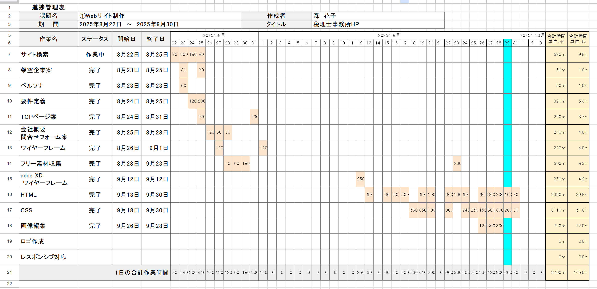

本作品は、WEBデザイン・コーダー・ディレクター・マーケティングを学ぶ学校に入校して最初に取り組んだ課題制作です。 企画立案からデザイン、コーディングまでを一貫して行い、合計150時間以上をかけて制作しました。 税理士事務所という堅実さと信頼感が求められる業種をテーマに、情報設計やUI/UXを意識しながら、ユーザーにとって分かりやすく安心感のあるサイト構成を目指しました。 基礎から実践までを体系的に学び、多くの試行錯誤を重ねた思い入れのある作品です。
【URL】
【担当】
企画立案（5時間）、ペルソナ設定（1時間）、デザインコンセプト（5時間）、サイトマップ（5時間）、ワイヤーフレーム（10時間） 素材収集（5時間）、画像加工（10時間）、HTMLコーディング（40時間）、CSSコーディング（70時間）
【サイトの目的】
本サイトの目的は、藤井税理士事務所の信頼性と専門性を分かりやすく伝え、初めて税理士を探すユーザーの不安を解消することです。 税務や会計に詳しくないユーザーでも直感的に理解できる情報構成を意識し、サービス内容や事務所の強み、相談の流れを明確に整理しました。 また、問い合わせへの心理的ハードルを下げるため、安心感のある導線設計を行い、相談・依頼につながることを目指しました。
【ターゲット】
メインターゲットは、既存顧客層のサービス向上です。 サブターゲットはスタートアップ起業の新規顧客獲得です 。 また、求人情報を掲載し求職者にダイレクトにアプローチしています。
【デザインについて】
デザイン面では、税理士事務所に求められる「信頼感」「誠実さ」「堅実さ」を重視しました。 全体の配色は落ち着いたトーンを基調とし、視認性と可読性を意識したレイアウトを採用しています。 装飾を抑えつつも、余白や文字組みで情報の整理を行い、親しみやすさを感じられるデザインを目指しています。
【進捗管理】
全工程の工数を分単位で可視化し管理しました。HTML/CSSコーディングに計90時間以上を充てるなど、各タスクの所要時間を正確に把握することで、計画的な制作遂行能力を追求しています。
ペルソナ設計
既存顧客・新規顧客・求職者の3属性に対し、理想と現実の2パターンを定義。スピード感を求めるIT層から、安定重視の製造業、成長環境を求める若手求職者まで、ニーズや行動特性を具体化しました。
ワイヤーフレーム AdobeXD
信頼感を醸成するネイビーを基調に、視認性の高い余白設定やフォント選定を行い、実務に即したデザインを作成。XDを活用し、一貫性のあるインターフェース構築を追求しています。
サービス紹介
税理士事務所としての信頼感を得るため各サービス内容に直結する画像を配置しました。シンプルなレイアウトを採用し青色を基調とした一貫性のあるボタン配置を徹底しています。
採用情報
働く環境やメンバーの雰囲気が伝わるよう、人物中心の明るい画像を選定しました。円形や多角形のレイアウトを使い分け親しみやすさを演出。募集要項や福利厚生など、求職者が求める情報を掲載しています。
【コーディングについて】
HTMLとCSSを用いて、構造を意識したセマンティックなマークアップを心がけました。 保守性と可読性を考慮し、クラス設計や命名規則にも配慮しています。
【困難だった点と解決策】
最も困難だった点は、情報量の多い税理士事務所の内容を、いかに分かりやすく整理するかという点でした。 初期段階では情報が煩雑になり、ユーザー視点が不足していました。 そこでペルソナを再設定し、ユーザーの行動や疑問を洗い出すことで、情報の優先順位を明確化しました。 その結果、構成をシンプルに整理でき、目的に沿ったサイト設計へと改善することができました。


{kind=link}
{kind=link}
{kind=link}
{kind=link}
{kind=link}